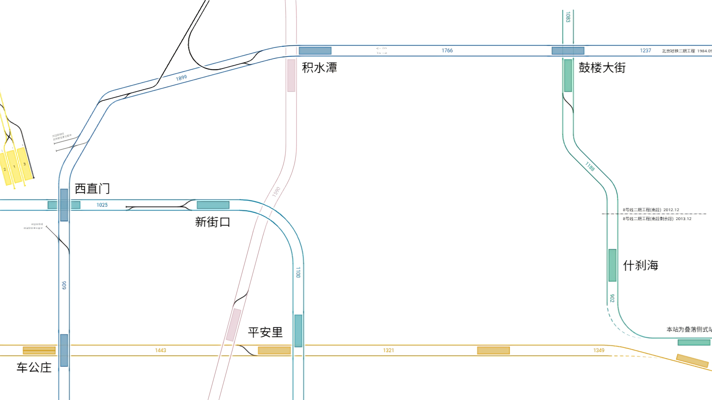
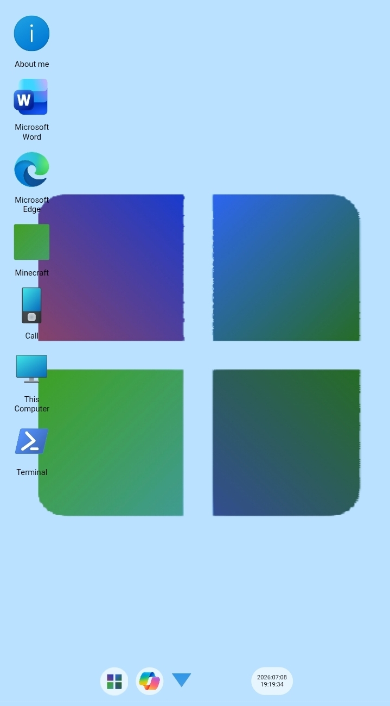

A geography homework

A geography research report made by html
My personal blog website

An improvement of SierraQin's project

No.1 Windows14 simulator all over the world ( now are portrait-only, and it is just a demo)
A geography research report made by html

A geography research report made by html